前言
虽然应该还有不少需要做的事，总之一件件做，但果然色图才是最重要的呀（，所以今天就要来爬取pixiv了。不出意外的话，这就是之前提到的重制版了，目的是写一个下载插画的爬虫。废话不多说，我们来开始吧(￣▽￣)~*
功能要求:
- 下载某画师的插画作品
- 下载搜索到的插画作品
获取画师的插画作品
我们进入画师的主页，按F12进入浏览器的开发者工具，进入NetWork面板，分类选择XHR。按F5刷新后，会发现name中多了一个名叫all?lang=zh的get请求。点击查看Headers中的Request URL。
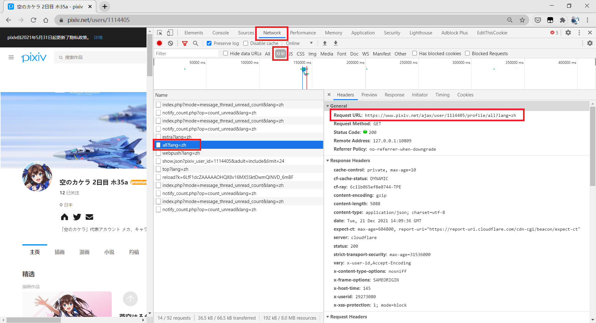
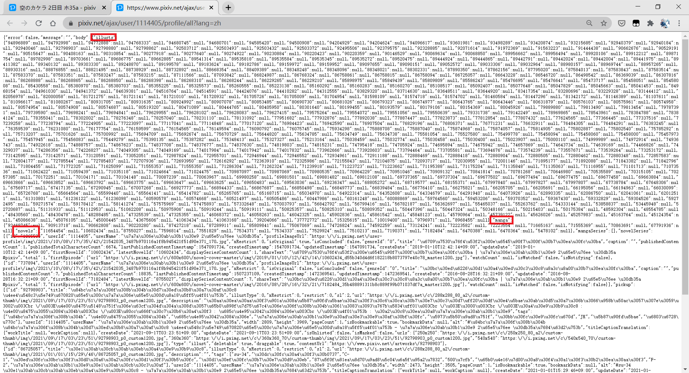
进入Request URL，通过仔细观察，我们不难发现，这是个保存着作者所有作品id的json对象。illusts后的json对象中保存着所有插画作品的id。manga后的json对象中保存着所有漫画作品的id。novels后的json对象中保存着所有小说作品的id。这样就得到画师的插画作品了。
1 | def get_illust_ids(self): |
获取搜索的插画作品
第一页作品
我们搜索某内容并进入插画作品分类。按同样的方式打开控制台后刷新页面。发现name中多了一个get请求，点击并查看Headers中的Request URL。
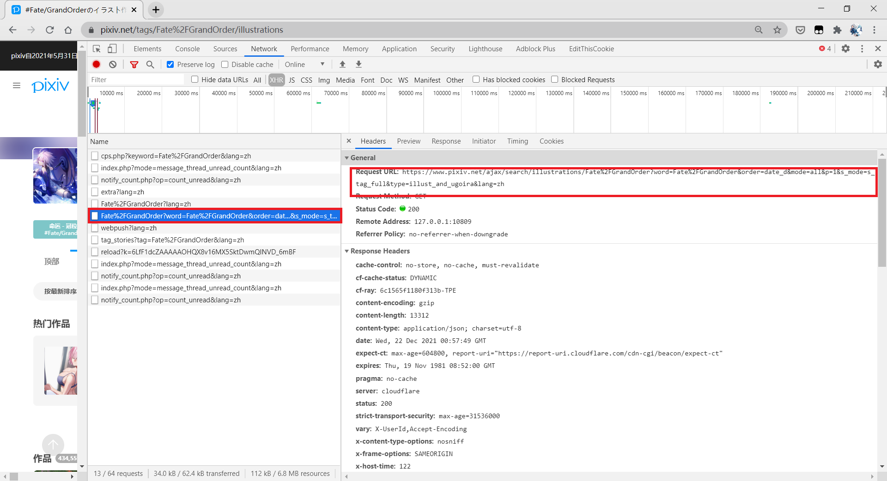
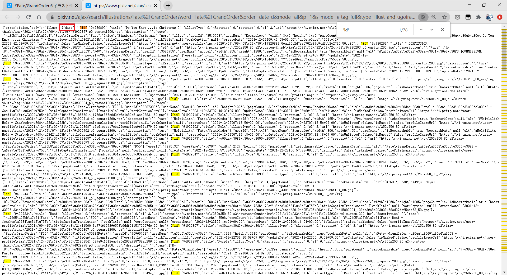
打开Request URL，通过观察容易发现，这里保存着作品id。但我们在页面中查找”id”的时候却发现有78个，pixiv一个页面中保存着6x10一共60幅作品，这78个id里，肯定有不是作品id的我们不需要的id，如何分辨呢。通过仔细查看json数据，我发现数组”data”中，一共有60个json对象，正好和页面搜索结果一一对应。这些json对象的第一个key”id”的值，便是我们搜索得到的作品id。
1 | def get_one_illust_ids(self, p): |
获取全部页数
通过分析链接容易知道，param中的p即表示当前链接是搜索结果的第x页。只要让p=的数字递增，便可实现翻页效果，直到获取到所有作品id。那么又引出一个问题，什么时候到达最后一页呢？打开搜索后的界面，不难发现这个元素。
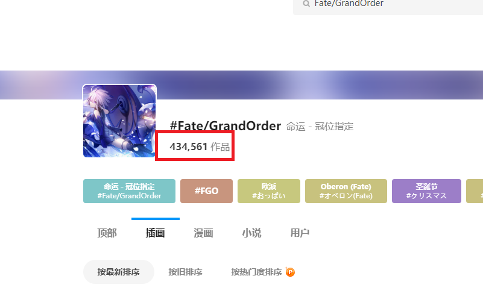
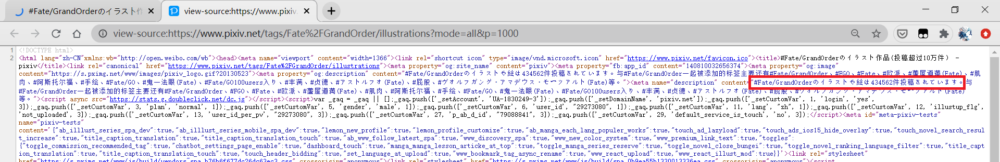
这是搜索到的总的作品数，要知道pixiv每一页的数量都是固定的60幅，这样就能计算出总页数了。值得注意的是pixiv最多展示1000页，就算总作品数大于6w，也只能看到前1000页的作品。
1 | def get_illust_count(self): |
作品限制级
当我们在用户设置里选择显示R18与R18G作品时，便可以显示R18与R18G的作品。
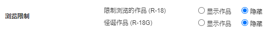
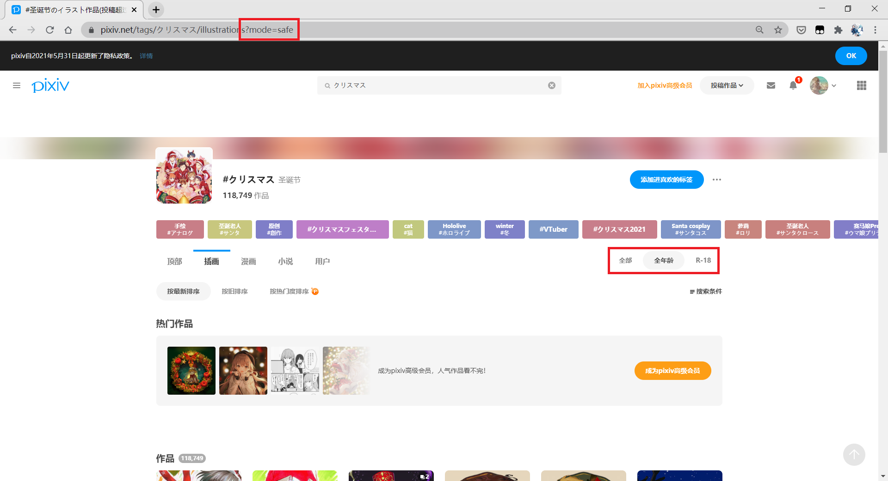
在用户设置–>浏览限制中选择显示作品后，再次搜索。会发现页面上多出了限制级分类。网页链接多出了?mode=safe，这便是和限制级有关的部分了。当mode=safe时，显示全年龄。当mode=r18时，显示R18以及R18G作品。当没有这部分或者mode=all时，全年龄和限制级作品全都显示。
值得注意的是，若不选择显示限制级作品，就算手动修改链接为mode=r18也是不会显示限制级作品的。
另外，画师作品也是区分限制级的，当在用户设置中关掉显示r18与r18g作品时，查看画师作品时只显示全年龄作品，否则全部显示。这只和用户设置有关。
下载作品
判断是否下载作品
有了作品id后，我们需要判断是否要下载该作品。pixiv判断一个作品的受欢迎程度是根据三种数值来判断的，分别是点赞数，收藏数和浏览量。使用哪一个都没关系，甚至采用某种算法对这三个数值进行计算后得到的数值都可以。毕竟我是自己用的，就不搞那么复杂了，我就用收藏数来作为判断某作品是否是我想要下载的依据。
有了作品id后，我们可以拼接字符串，来获得作品的地址。我们打开一幅作品，进行分析。
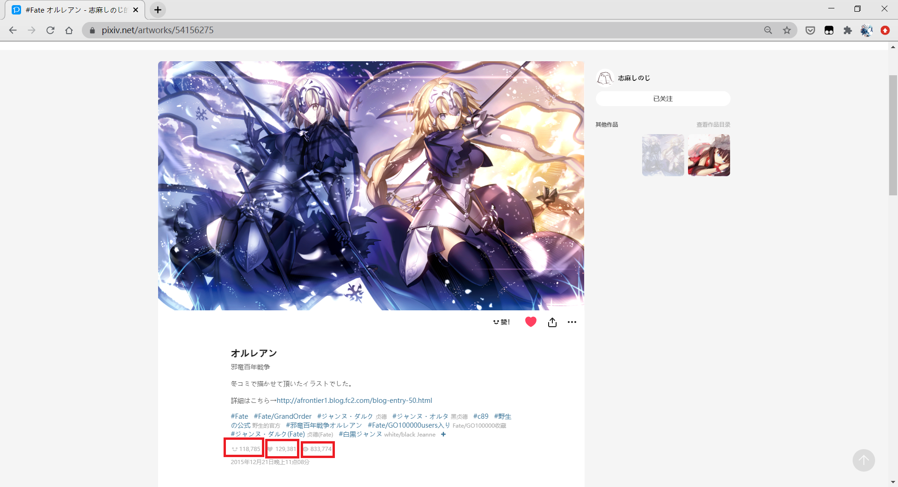
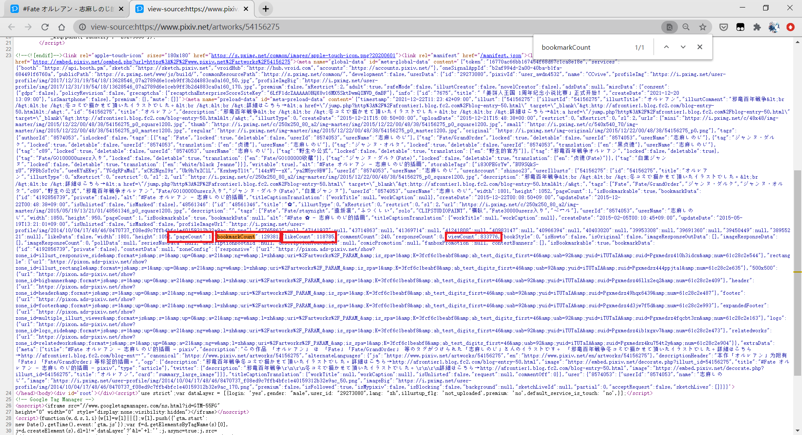
发现我们需要的属性都在页面上。源码中，使用bookmarkCount表示收藏数，likeCount表示点赞数，viewCount表示浏览量。我们还发现pageCount这个属性，这是表示该作品一共有多少页的属性。
1 | def get_resource(self, id): |
判断作品是静图还是动图
pixiv的静图与动图的下载方式不同，所以区分它们是很有必要的。我们打开一幅动图作品分析其源码，试着找到它与静图作品的不同之处。经过我不懈努力，终于发现个是在所有动图页面中都存在，而不存在于静图页面的单词。这里直接说结论:ugoira。（写爬虫可真费眼睛）
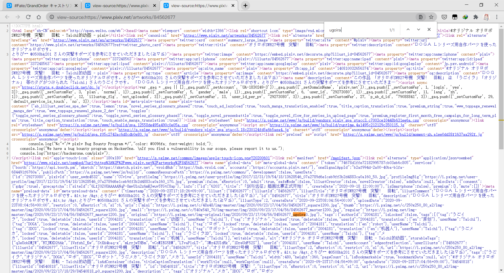
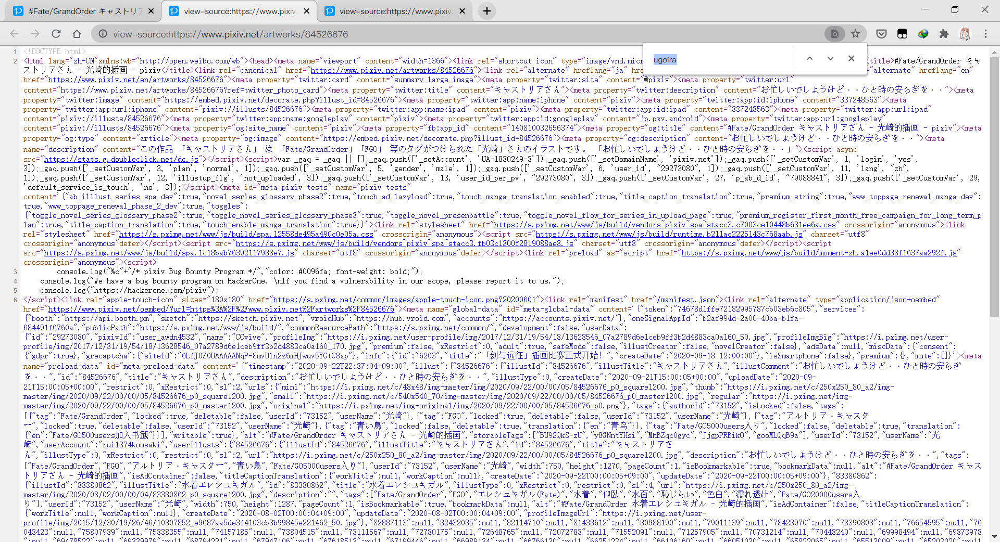
1 | def is_ugoira(self, h): |
下载静图
页面代码中key”urls”的值即是静态图的二进制文件。甚至还贴心的可以让我们选择像素，有mini、thumb、small、regular、original五种可以选择。既然要下载肯定要下原图啦。需要注意的是，二进制文件均是是以p0结尾的。对于有多张图片的作品，只要递增p后的数值就可以了。我们之前获得的pageCount属性在这里就发挥用处了。但当我们直接打开这些图片链接的时候，发现403了。经过谷歌大神的解答，我了解到这是pixiv的防盗链机制，如果返回头referer不带作品链接就会报430。那这个问题就等写代码的时候再解决吧。
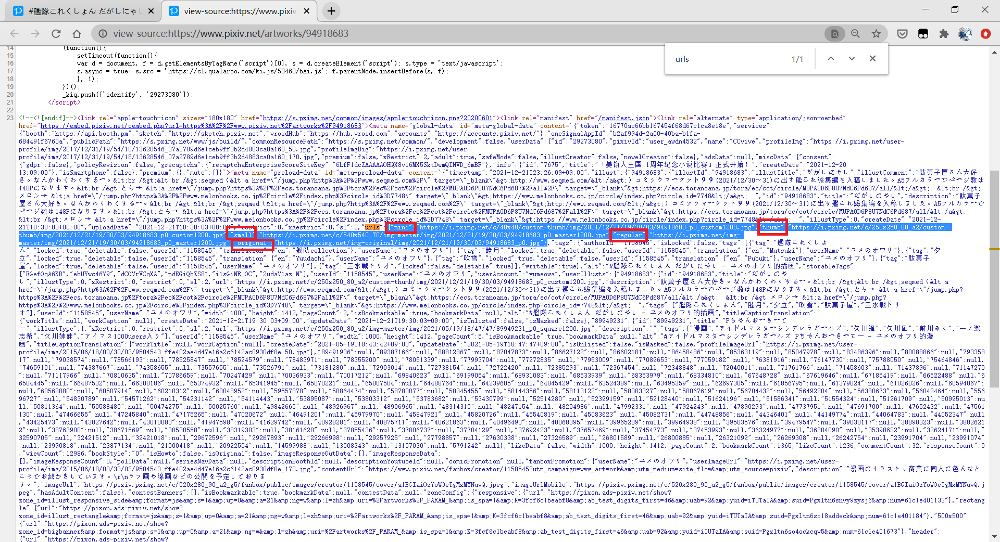
1 | def get_original_list(self, resource): |
下载动态图
我们打开一幅动图作品，按之前的方式打开控制台并刷新。发现name中多了一个名为ugoira_meta?lang=zh的get请求。点击查看Header中的Request URL，发现该链接保存着动图的压缩包链接和所有文件名以及每个文件的帧延迟时间。有了每一帧和每一帧的延迟时间，我们就可以合成gif了。
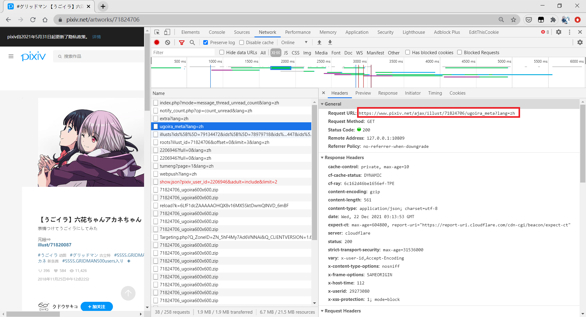
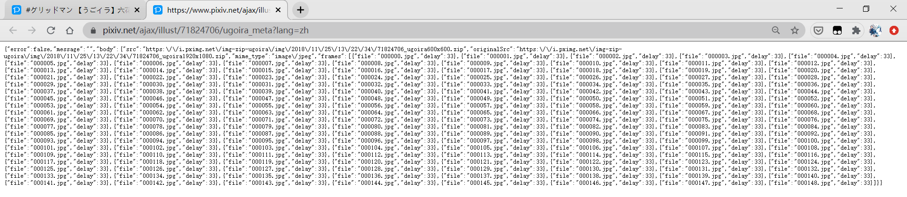
1 | def ugoira_download(self, resource, file_path): |
需解析的URL汇总
https://www.pixiv.net/ajax/user/ +用户id+ /profile/all?lang=zh:
通过该URL可获取该用户的所有作品的id。
https://www.pixiv.net/ajax/search/illustrations/ +搜索内容+ ?mode= +限制级分类+ &p= +页数:
通过该url可获取某搜索内容下，某限制级分类的某页所有作品的id。
https://www.pixiv.net/tags/ +搜索内容+ /illustrations?mode= +限制级分类:
通过该url可获取某搜索内容下，某限制级分类的作品总数。
https://www.pixiv.net/artworks/ + 作品id:
通过该url可获取某作品的收藏数，页数，是静图还是动图。还可以从该页面获取原图链接。
https://www.pixiv.net/ajax/illust/ +动图作品id+ /ugoira_meta?lang=zh:
通过该url可获取动图作品的压缩包和每一帧的延迟时间。
代码
项目代码已上传至github，请至此处查看: pixivSpider